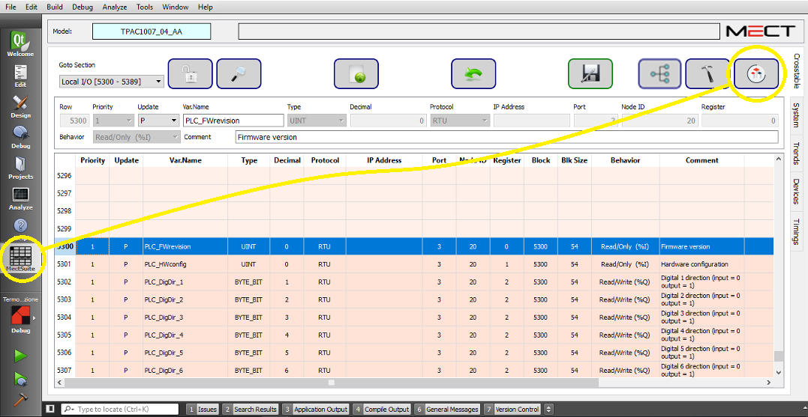

Die PLC-Software wird über die Schaltfläche  von Crosstable gestartet.
von Crosstable gestartet.

Die in der Crosstable vorhandenen Variablen entsprechen denen der SPS-Software. Die Aktualisierung der Liste der Variablen kann auf 3 Arten erfolgen:
Drücken der Taste  der Crosstable
der Crosstable
Build vom HMI-Teil: 
Deploy vom HMI-Teil: 
In der ATCMControl-Umgebung befinden sich die Crosstable-Variablen, die in das SPS-Projekt importiert wurden.

Bei der Erweiterung von “Configuration” und “Resource1” finden wir die Dateien “Crosstable.gvl”, “Resource1.gvl” und verschiedene Task.

Die Datei Crosstable.gvl ist die Datei, die alle globalen Variablen des Austauschs zwischen HMI und SPS enthält. Diese Datei sollte nur zum Lesen verwendet werden, um die Namen der Variablen zu kennen, und sollte niemals geändert werden.
In der Datei Resource1.gvl werden alle globalen Variablen der SPS deklariert. In diese Datei können Sie Variablen einfügen, die von der HMI-Umgebung nicht benötigt werden.
Es gibt 6 Task, die unterschiedliche Funktionalitäten und Zykluszeiten haben:
Task0_Init: Läuft nur beim Start der SPS und hat somit absolute Priorität. Wird in der Regel zur Initialisierung von Variablen verwendet.
Task1_Alarms: hat Vorrang vor allen anderen task. Sie beginnt, wenn der Alarm ausgelöst wird und das in die Aufgabe eingegebene Programm nur einmal ausgeführt wird. Task1_Alarms wird neu gestartet, wenn jede neue Alarmbedingung eintritt.
Task2_Events: hat Vorrang vor allen anderen task außer dem Task1_Alarms. Sie beginnt, wenn das Ereignis ausgelöst wird und das in die Aufgabe eingefügte Programm nur einmal ausgeführt wird. Task2_Events wird neu gestartet, wenn jede neue Ereignisbedingung eintritt.
Task3_Fast_10ms: diese Task läuft alle 10ms.
Task4_Normal_100ms: diese Task läuft alle 100ms.
Task5_Slow_1000ms: diese Task läuft alle 1000ms
HINWEIS: es ist ratsam Task4_Normal_100ms für die meisten Anwendungen zu verwenden.
Innerhalb jeder Task gibt es mindestens ein Programm, z.B. wenn Sie die Task5_Slow_1000ms erweitern, finden Sie das Slow_Inst1-Programm, wo Sie, in diesem Fall in der ST-Sprache, einen Teil Ihrer Anwendung implementieren können. Auf diese Weise ist es möglich, Code in die Programme zu schreiben, die in jeder Task vorhanden sind.